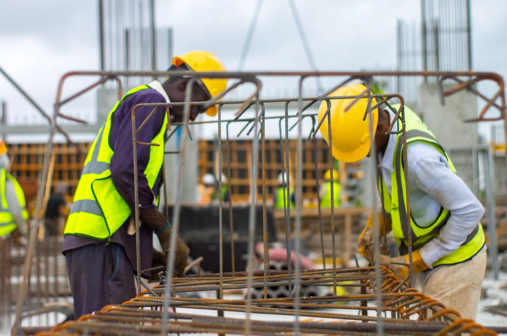

A building that wastes energy costs its owner every month it stands. Civil Merc treats sustainability as part of the structure: how the building faces the sun in Abuja, what it is made of, and how it draws power. It is specified at design, not painted on at handover.
The work is energy-efficient buildings, eco-friendly materials, and renewable systems. Orientation, shading, insulation, and openings are chosen for Abuja heat, so cooling is not the only way the building stays usable. Materials are selected for how they perform and for the waste and sourcing that come with them. Renewable systems — solar where the roof and the supply allow it — are drawn with the structure and the electrical design, not bolted on after the slab is finished.

Power in the city is not something a building can take for granted. A design that assumes constant supply, and then cools every room the same way, will cost more to run than the client was told. We test orientation, fabric, and services in BIM and 3D models before they are built, so a shading choice or a plant location can still change.
The same drawings follow local codes, and Eurocodes and ASTM where the specification requires them. Environmental, social, and governance expectations are written into the brief: materials, site practice, and a building the client can explain to partners and lenders. Site practice holds a zero tolerance on accidents. Handover is still aimed at zero defects.
The construction price is one number. The monthly cost of cooling, water, and replacement is the number the owner lives with. We design so those running costs are lower because the building needs less energy to stay comfortable, and because materials and plant were chosen for how long they last. That is the practical side of sustainable construction: a building that is cheaper to occupy, and that can be described honestly against environmental and social expectations.

If the next project in Abuja should be specified for energy, materials, and long-term cost, start at Suite E3, SHM Complex, before the Federal Ministry of Works, Mabushi. Quality you can see, reliability you can feel.